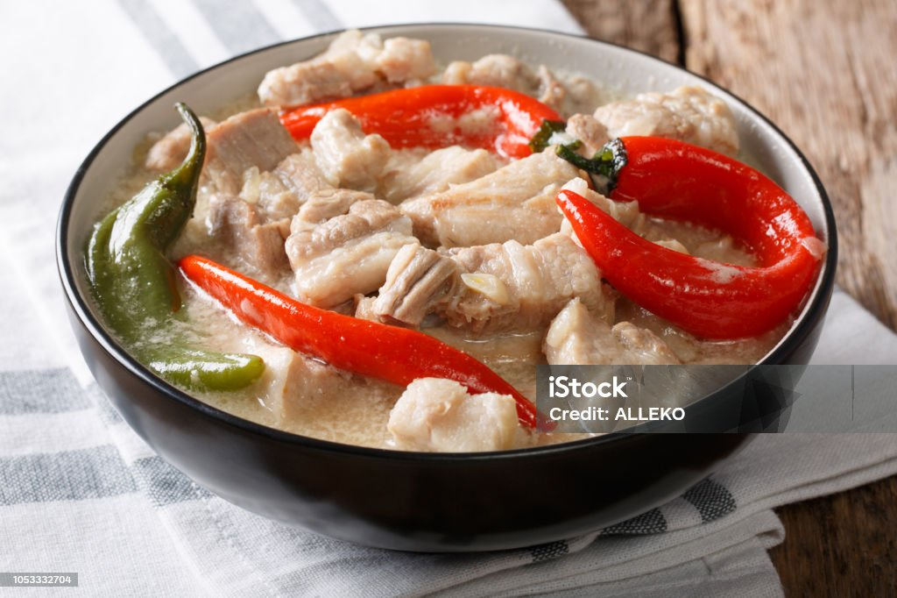

Bicol Express Recipe
Ingredients
- 2 tbsp. Oil.
- 5 cloves. Garlic.
- 1 pc. Ginger.
- 1 pc. Medium size Onion.
- 250 g. Pork Belly.
- 2 tbsp. Bagoong Alamang.
- 2 cups Coconut Milk
- 250 g. Green finger chili
- 100 g. red chili
Instructions
- Sauté garlic, ginger, onion, pork and bagoong for 5 minutes.
- Pour coconut milk and simmer for 20-25 minutes until pork is tender.
- Add finger and red chili and cook for another 10 minutes. Season with salt and pepper.
- Transfer into a serving plate and serve, and enjoy!
Video Instructions
Here is a step by step youtube video of how to cook a delicious Bicol Express